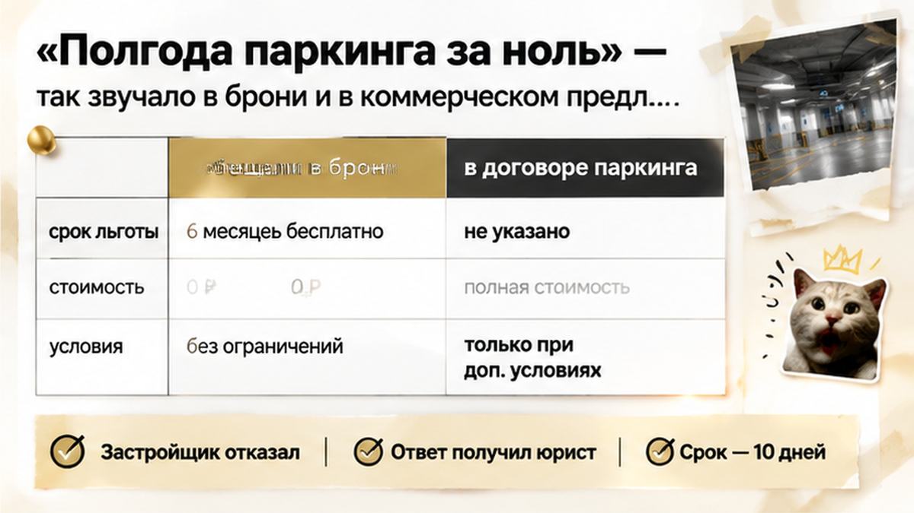
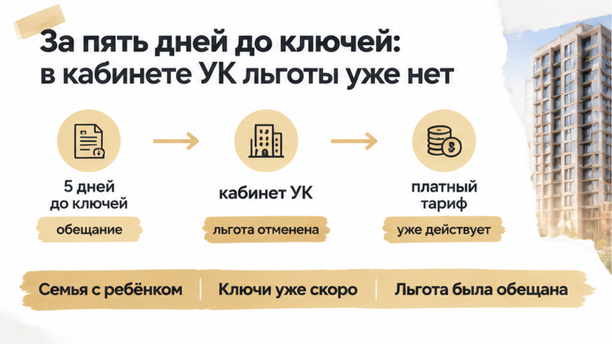
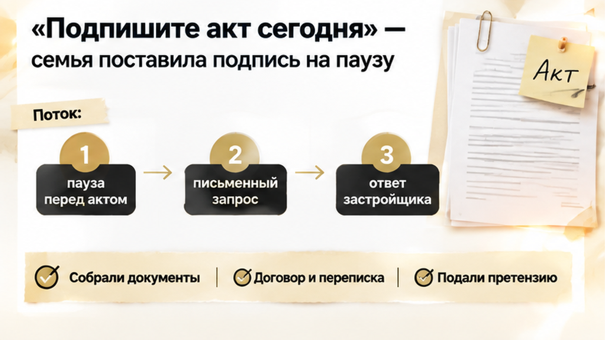
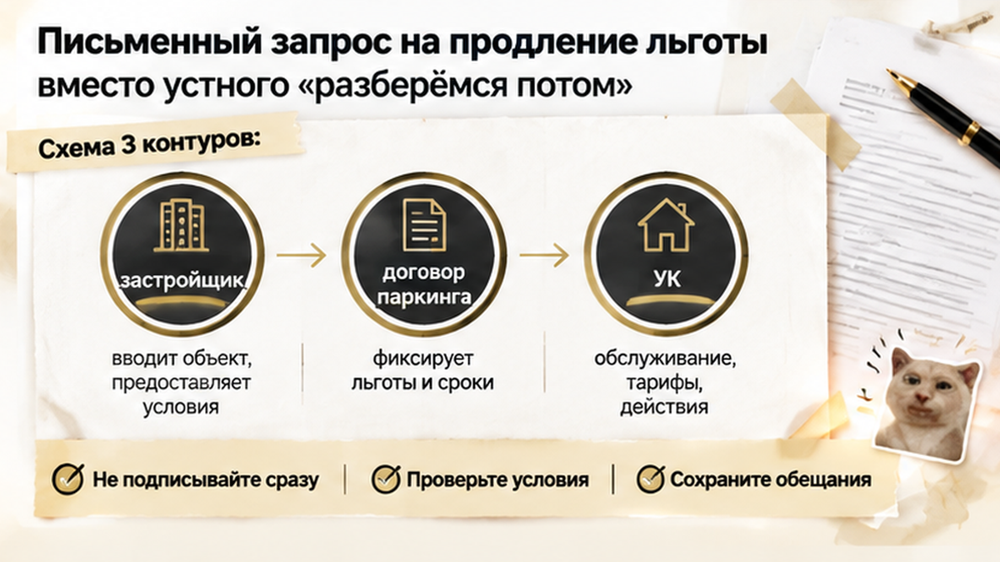
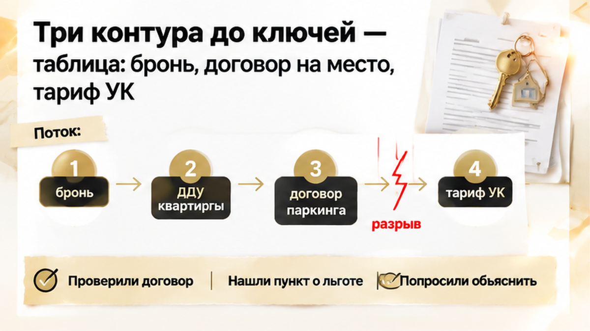

За пять дней до ключей семья в Тюмени получила оферту с тарифом на паркинг 8–12 тысяч рублей в месяц — вместо обещанного полугода за 0 ₽. В сентябре 2026 года покупатели открыли личный кабинет УК и не нашли там льготу, на которую рассчитывали при покупке. В бронировании и коммерческом предложении стояло «паркинг в подарок полгода», поэтому отдельную плату в семейный бюджет не закладывали. На приёмке менеджер предложил подписать акт по квартире, а вопрос с парковкой остался открытым. Семья решила сначала разобраться, где заканчивается передача жилья по ДДУ и начинаются отдельные обязательства по машино-месту.
Я Святослав Шакин, The Риэлтор, Тюмень. Разбираю такие истории без «всё пропало»: что именно обещали, где это записано и какой документ стоит запросить до ключей.

Для покупателя это не абстрактный бонус с баннера, а условие, под которое считают расходы после переезда. Но бронь и коммерческое предложение обычно относятся к преддоговорному этапу. Пользование машино-местом, его передача и тариф могут оформляться отдельно.
Обычный покупатель спрашивает: «Мне же обещали бесплатно?» Я бы начал с другого: «Покажите, в каком подписанном документе закреплены эти шесть месяцев и кто обязан их предоставить». От ответа зависит, кому направлять требование и на какие условия ссылаться.
Нужно поднять пакет по машино-месту: отдельный ДДУ, договор купли-продажи либо соглашение с застройщиком, УК или оператором — смотря что оформлено. Затем сопоставить формулировку льготы, срок и объект. Обещание должно относиться именно к вашему месту.
Если нулевой тариф закреплён в договоре или отдельном соглашении, позиция покупателя понятнее. Если остался только в рекламной части, бумагу не выбрасываем, но и не считаем готовой гарантией. Смотрим документы и обстоятельства покупки. Принцип тот же: обещание в брони нужно сверять с официальными документами.

Сумма в оферте — не единый тариф для паркингов Тюмени. Но сам расчёт ещё не объясняет, что случилось с обещанием. Льготу отменили, не перенесли или применяют по другим условиям? Делать вывод о срыве всей сделки по одному экрану рано.
Вместо общего «почему так дорого?» я бы задал стороне, отвечающей за начисления, три вопроса. Почему не отображается льгота? На основании какого документа введён платный тариф? Каким документом готовы подтвердить сохранение или продление акции?
Устное «разберёмся потом» не позволяет проверить ни срок, ни сумму. Сохраняем оферту, переписку, скриншоты кабинета и редакцию коммерческого предложения на дату бронирования — чтобы показать точное расхождение между обещанным условием и новым расчётом.
И не смешиваем два решения: акт касается передачи квартиры, а платное пользование паркингом может регулироваться другим договором.
Для покупателя квартира и место для машины — одна покупка из семейного бюджета. Но в документах это могут быть разные отношения — со своими платежами, сроками и ответственными сторонами.
ДДУ на квартиру не обязательно регулирует пользование паркингом. Машино-место может оформляться отдельным ДДУ, договором купли-продажи или соглашением с застройщиком, УК либо оператором. Иногда — уже после ввода дома. Искать парковочную льготу только в квартирном договоре — значит проверять не весь комплект.
Обычный покупатель спрашивает: «Мне же обещали полгода бесплатно?» Я бы начал точнее: «В каком документе это закреплено и кто обязан применить нулевой тариф?»
Разделите бумаги на три стопки:
Дальше — сверка. Совпадает ли место? От какой даты считают бесплатные месяцы? Перенесена ли льгота из брони в подписанное соглашение? Нет ли в окончательном договоре другого порядка расчётов?
Отсутствие паркинга в квартирном ДДУ не делает бронь бесполезной: она может подтверждать условия, обсуждавшиеся до сделки. Но рекламная строка сама по себе не гарантирует продления акции. Смотрим всю связку документов, а не самую приятную формулировку.
С другими обещаниями подход тот же. Например, если в брони обещали землю в собственности, а в проектной декларации указана аренда, презентацией вопрос не закрыть. Документы покажут, что требовать и у кого.

На приёмке менеджер предложил подписать акт по квартире, не связывая его с парковочным тарифом. Семья не стала принимать два разных решения одним движением ручки.
Попросили документы, зафиксировали дату уведомления о платном тарифе и предложили письменно продлить акцию либо оформить отдельное соглашение. При этом саму квартиру продолжали принимать: проверяли состояние, соответствие ДДУ, замечания.
Пауза перед подписью — не то же самое, что отказ от приёмки. Спор о парковочной льготе сам по себе не препятствует передаче квартиры. Недостатки жилья фиксируют при приёмке, а вопросы о тарифе адресуют стороне, отвечающей за него по документам.
С отделкой так же: если вместо предусмотренной договором чистовой — голые стены, результат сравнивают с ДДУ, не с буклетом. Подробно разобрал, что делать, когда обещанная отделка не совпадает с квартирой на приёмке.
В этой истории семья разделила передачу жилья и согласование парковочного тарифа, а вместо устного «разберёмся потом» запросила письменное решение. Это не гарантирует сохранения льготы. Зато позволяет проверять конкретные условия, не смешивая акт по квартире с согласием платить за машино-место.
Если льготу на паркинг отменили за неделю до ключей, подписывать акт или добиваться письменного продления акции?

Семья собрала бронь, коммерческое предложение, документы по машино-месту, переписку и уведомление о тарифе. Затем направила застройщику и УК письменный запрос: действует ли обещанная льгота, откуда взялось платное начисление и можно ли оформить продление отдельным соглашением.
Запрос отправлен — это ещё не значит, что льготу вернули. Зато вместо разговора «нам обещали — мы уточним» появились документы, конкретное расхождение и просьба дать письменную позицию.
Я бы начинал письмо не с возмущения, а с привязки к сделке: дата бронирования, номер машино-места, реквизиты договоров, точная формулировка акции. Затем — начало начислений и сумма именно из вашего уведомления. Дальше просьба по существу:
«Прошу подтвердить сохранение льготы “шесть месяцев за 0 ₽” по указанному машино-месту и письменно закрепить срок её действия. Если льгота не применяется, прошу предоставить мотивированный ответ со ссылкой на договор и основание начисления платного тарифа».
Нужно продление акции — предложите подписать дополнительное соглашение с конкретными датами и условиями. «Сохраним подарок» и «нулевой тариф действует с такой-то даты по такую-то» — не одна и та же определённость.
Приложите бронь, коммерческое предложение, документы по месту и скриншоты кабинета. Сохраните обращение с вложениями и подтверждением доставки. Передаёте через офис — попросите отметку о принятии на своей копии.
Обычный покупатель после встречи ждёт звонка. Я предпочитаю письменно подтвердить: «Сегодня обсудили сохранение льготы и отдельное соглашение. Ждём письменную позицию». Заодно — попросить назначить ответственного и указать срок ответа.
Письмо не подменяет договор: несогласие с тарифом само по себе не отменяет начисления. Спор о паркинге не делает квартиру автоматически непригодной к передаче. Замечания к квартире фиксируют при приёмке, условия парковки разбирают по своим документам.
Нужно понять, где заканчивается обещание менеджера и начинается обязательство по договору? Напишите мне — разберём бронь, документы на машино-место и тариф УК без спешки перед ключами.

Разложите бумаги по трём контурам: что обещали до покупки, что подписали по машино-месту и по каким правилам выставляют счёт. Бронь и коммерческое предложение относятся к первому, но сверить стоит оба документа.
| Документ | Что найти | С чем сопоставить | Что уточнить письменно |
|---|---|---|---|
| Бронь | Шесть месяцев за 0 ₽, срок предложения, объект и ограничения акции | Коммерческое предложение и подписанные документы на место | Куда перенесено обещание о льготе |
| Коммерческое предложение | Размер льготы, условия получения, окончание акции, связь с покупкой квартиры | Бронь, договор на место, переписка менеджера | Как предложение связано с заключённой сделкой |
| Договор на машино-место | Номер места, цену, порядок передачи, сроки оплаты и льготный период | Бронь и коммерческое предложение — построчно | Закреплены ли шесть бесплатных месяцев и условия их изменения |
| Договор с УК или оператором | Тариф, начало начислений, порядок уведомления и изменения цены | Полученное уведомление и документы об акции | Почему льготы нет в кабинете и кто вправе её продлить |
Если в договоре льготы нет, бронь и коммерческое предложение не выбрасываем — прикладываем к запросу. Но рекламная строка сама по себе не гарантирует продление: у акции могут быть ограничения по сроку или условия, связанные с отдельным договором.
Проверяем совпадение обещания, конкретного места, подписанного договора и выставленного тарифа. В запросе указываем не «верните всё как было», а срок, сумму и документ, которые требуют уточнения.
Предлагают новый платный абонемент? Запросите вариант с сохранением льготы либо соглашение на переходный период. Вместо устного «потом исправим» нужен документ с датами, суммой и подписью уполномоченной стороны.
Здесь задача не в том, чтобы остановить покупку из-за любого расхождения. Задача — понимать, что именно вы подписываете и за что соглашаетесь платить. Собрать документы, отметить несовпадения и направить запрос можно до приёмки. Это спокойнее, чем разбираться с обещанным подарком уже по выставленным счетам.